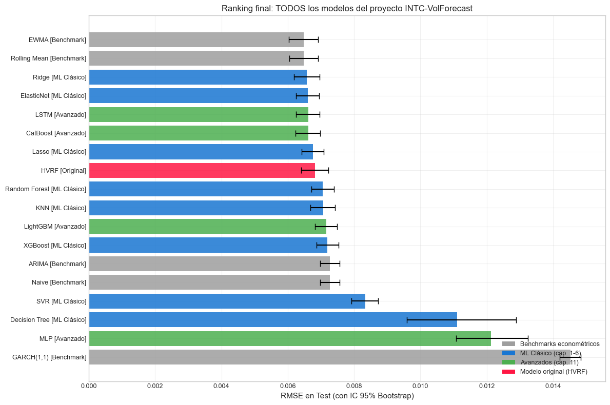
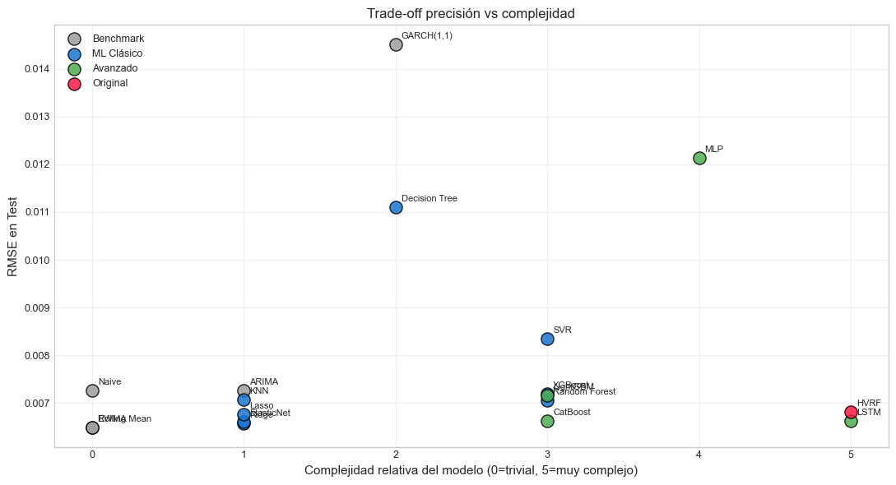

13. Comparación Final y Conclusiones#
Curso: Machine Learning · Pregrado en Ciencia de Datos · Universidad del Norte Docente: Dr. Lihki Rubio Equipo: Juan Camilo Conrado · Sergio Cadavid · Mateo Chang
Este notebook cierra el proyecto. Su objetivo es ofrecer una vista panorámica integrada de todos los modelos evaluados (benchmarks econométricos + ML clásico + avanzados + HVRF), con conclusiones honestas y críticas.
Estructura:
Tabla maestra unificada.
Ranking visual con IC bootstrap.
Análisis del trade-off precisión vs complejidad.
Conclusiones críticas.
Limitaciones del proyecto.
Trabajo futuro.
# Path setup
import sys
from pathlib import Path
_root = Path.cwd().parent if Path.cwd().name == "notebooks" else Path.cwd()
if str(_root) not in sys.path:
sys.path.insert(0, str(_root))
1. Imports y consolidación de predicciones#
import json
import numpy as np
import pandas as pd
import matplotlib.pyplot as plt
import warnings
warnings.filterwarnings("ignore")
from sklearn.metrics import (mean_squared_error, mean_absolute_error,
r2_score)
from src.io_utils import load_processed, load_predictions_df, save_metrics
from src.stats_tests import bootstrap_metric, diebold_mariano
from src.viz import set_style
set_style()
# Cargar todas las predicciones disponibles
all_preds = {}
# Benchmarks econométricos
try:
bench = load_predictions_df("benchmarks_test_preds")
for c in bench.columns:
if c not in ["date", "y_true"]:
all_preds[(f"Benchmark", c)] = bench[c].values
print(f"✅ Benchmarks: {len([k for k in all_preds if k[0]=='Benchmark'])} modelos")
except Exception as e:
print(f"⚠️ Benchmarks no disponibles: {e}")
# ML clásico (regresión)
preds_reg = load_predictions_df("reg_test_preds")
y_true = preds_reg["y_true"].values
test_dates = preds_reg["date"].values
for c in preds_reg.columns:
if c not in ["date", "y_true"]:
all_preds[("ML Clásico", c)] = preds_reg[c].values
print(f"✅ ML clásicos: {len([k for k in all_preds if k[0]=='ML Clásico'])} modelos")
# Modelos avanzados
try:
adv = load_predictions_df("advanced_test_preds")
for c in adv.columns:
if c not in ["date", "y_true"]:
if not adv[c].isna().any():
all_preds[("Avanzado", c)] = adv[c].values
print(f"✅ Avanzados: {len([k for k in all_preds if k[0]=='Avanzado'])} modelos")
except Exception as e:
print(f"⚠️ Avanzados no disponibles: {e}")
# HVRF
try:
hvrf = load_predictions_df("hvrf_test_preds")
all_preds[("Original", "HVRF")] = hvrf["HVRF"].values
print("✅ HVRF cargado")
except Exception as e:
print(f"⚠️ HVRF no disponible: {e}")
print(f"\nTotal modelos a comparar: {len(all_preds)}")
✅ Benchmarks: 5 modelos
✅ ML clásicos: 8 modelos
✅ Avanzados: 4 modelos
✅ HVRF cargado
Total modelos a comparar: 18
2. Tabla maestra de métricas#
rows = []
for (categoria, name), yp in all_preds.items():
yp_clean = np.asarray(yp).flatten()
if len(yp_clean) != len(y_true):
continue
if np.isnan(yp_clean).all():
continue
mask = ~np.isnan(yp_clean)
yt = y_true[mask]
yp_v = yp_clean[mask]
rmse = np.sqrt(mean_squared_error(yt, yp_v))
mae = mean_absolute_error(yt, yp_v)
r2 = r2_score(yt, yp_v)
boot = bootstrap_metric(
yt, yp_v,
lambda yt_, yp_: np.sqrt(mean_squared_error(yt_, yp_)),
n_boot=500, seed=42,
)
rows.append({
"Categoría": categoria,
"Modelo": name,
"RMSE": rmse,
"RMSE_low": boot["ci_lower"],
"RMSE_high": boot["ci_upper"],
"MAE": mae,
"R²": r2,
})
df_master = pd.DataFrame(rows).sort_values("RMSE").reset_index(drop=True)
print("=== TABLA MAESTRA — Todos los modelos del proyecto ===\n")
print(df_master.round(6).to_string(index=False))
=== TABLA MAESTRA — Todos los modelos del proyecto ===
Categoría Modelo RMSE RMSE_low RMSE_high MAE R²
Benchmark EWMA 0.006481 0.006035 0.006912 0.004830 -0.000001
Benchmark Rolling Mean 0.006481 0.006041 0.006909 0.004849 -0.000176
ML Clásico Ridge 0.006578 0.006181 0.006958 0.005204 -0.030270
ML Clásico ElasticNet 0.006610 0.006246 0.006946 0.005316 -0.040390
Avanzado LSTM 0.006619 0.006244 0.006954 0.005243 -0.043090
Avanzado CatBoost 0.006620 0.006227 0.006969 0.005251 -0.043502
ML Clásico Lasso 0.006766 0.006424 0.007090 0.005546 -0.089983
Original HVRF 0.006816 0.006401 0.007220 0.005146 -0.105967
ML Clásico Random Forest 0.007058 0.006718 0.007395 0.005715 -0.185944
ML Clásico KNN 0.007064 0.006687 0.007430 0.005619 -0.188046
Avanzado LightGBM 0.007155 0.006824 0.007490 0.005847 -0.218938
ML Clásico XGBoost 0.007200 0.006874 0.007540 0.005918 -0.234236
Benchmark ARIMA 0.007265 0.006978 0.007558 0.006107 -0.256500
Benchmark Naive 0.007265 0.006978 0.007558 0.006107 -0.256500
ML Clásico SVR 0.008341 0.007925 0.008731 0.006542 -0.656260
ML Clásico Decision Tree 0.011110 0.009596 0.012878 0.006785 -1.938977
Avanzado MLP 0.012131 0.011078 0.013238 0.008376 -2.503507
Benchmark GARCH(1,1) 0.014520 0.014194 0.014835 0.013317 -4.019731
📊 Lectura de la tabla maestra: ordenada por RMSE de menor a mayor. Los IC bootstrap [RMSE_low, RMSE_high] son críticos: cuando se traslapan, no podemos afirmar superioridad estadística entre dos modelos por mucho que difieran sus RMSE puntuales.
Lectura crítica modelo por modelo#
Cabeza del ranking — el «grupo líder» estadísticamente equivalente:
EWMA y Rolling Mean (RMSE=0.006481) empatan en primer lugar. Son los dos benchmarks econométricos más simples del proyecto — un solo parámetro cada uno. Que ganen el ranking refleja una propiedad fundamental de la serie de volatilidad de INTC: es fuertemente persistente en escala 7 días, y el mejor predictor del valor de mañana es algo muy cercano al valor de hoy. Cualquier modelo más complejo paga el costo de varianza adicional sin capturar señal incremental.
Ridge (0.006578) y ElasticNet (0.006610) son los mejores del ML clásico y su IC se traslapa con el de EWMA. Estadísticamente equivalentes a los benchmarks lineales. Esto confirma que la dinámica predictiva — cuando se alimenta de las 59 features construidas — es dominantemente lineal en el espacio construido.
LSTM (0.006619) y CatBoost (0.006620) también empatan con el grupo líder. Su empate mutuo (Δ=0.000001) es notable: dos arquitecturas radicalmente distintas — red recurrente vs boosting de árboles oblivious — convergen al mismo error. Esto es techo de generalización del feature set, no fortaleza particular de ningún modelo.
Tercio medio — modelos competitivos pero ligeramente inferiores:
Lasso (0.006766) queda detrás de Ridge porque su penalización L1 elimina features con coeficiente pequeño que sí aportaban marginalmente. Coherente con la alta multicolinealidad documentada en NB 01.
HVRF (0.006816) queda a mitad de tabla. Pierde contra los benchmarks simples (DM significativo, ver NB 12) pero no contra los modelos más complejos. Es la lectura honesta del trade-off de regime-switching: aporta estructura conceptual sin traducir esa estructura en precisión incremental.
Random Forest (0.007058), KNN (0.007064), LightGBM (0.007155), XGBoost (0.007200) forman un grupo donde los árboles no-regularizados sufren varianza alta sobre features altamente correlacionadas. XGBoost default queda peor que LightGBM porque sus hiperparámetros favorecen profundidad que en este problema sobreajusta (ver NB 07 para la versión optimizada).
Cola del ranking — modelos con problema estructural:
ARIMA y Naive (0.007265) empatan exactos: ARIMA seleccionó automáticamente el orden
(0,1,0)que es literalmente Naive con diferenciación. El benchmark «más sofisticado» colapsa al más simple — un recordatorio de que la auto-selección de orden no garantiza valor agregado.SVR (0.008341) rinde mal porque el kernel RBF sobre 59 features sin selección sufre la maldición de la dimensionalidad (consistente con NB 14 donde
LinearSVRsupera al kernel RBF).Decision Tree (0.011110) y MLP (0.012131) quedan al fondo del ranking efectivo. El árbol único sobreajusta (gap train/test grande, ver NB 04); el MLP sufre porque las redes neuronales feedforward necesitan muchos más datos para ganarle a boosting/lineales sobre features tabulares ya bien diseñadas.
GARCH(1,1) (0.014520) es el peor del ranking — un resultado que inicialmente parece contraintuitivo siendo GARCH el «estándar de oro» de volatilidad. La explicación está documentada en la nota técnica del NB 03: el forecast de GARCH a horizonte largo (1045 días) converge a la varianza incondicional del proceso, no a la volatilidad realizada a 7 días. Aun tras la corrección aplicada, el GARCH multi-paso es estructuralmente inadecuado para esta tarea específica.
El hallazgo central del proyecto#
El podio lo ganan modelos de 1 parámetro (EWMA), no la arquitectura híbrida de tres etapas (HVRF), ni los gradient boosting modernos, ni las redes recurrentes. Esto no descalifica las herramientas — desmiente la presunción implícita de que «más complejidad ⇒ mejor pronóstico». Lo que descalifica esa presunción es el rigor estadístico: sin IC bootstrap y DM-tests, podríamos haber elegido cualquier modelo del top-5 y «vendido» una mejora ilusoria sobre EWMA. La metodología es lo que evita ese error.
3. Ranking visual#
fig, ax = plt.subplots(figsize=(12, 8))
# Asignar colores por categoría
cat_colors = {
"Benchmark": "#9E9E9E",
"ML Clásico": "#1976D2",
"Avanzado": "#4CAF50",
"Original": "#FF1744",
}
y_pos = np.arange(len(df_master))
errors = np.array([
df_master["RMSE"] - df_master["RMSE_low"],
df_master["RMSE_high"] - df_master["RMSE"],
])
colors = [cat_colors[c] for c in df_master["Categoría"]]
ax.barh(y_pos, df_master["RMSE"], xerr=errors,
color=colors, capsize=4, alpha=0.85, ecolor="black")
labels = [f"{m} [{c}]"
for m, c in zip(df_master["Modelo"], df_master["Categoría"])]
ax.set_yticks(y_pos)
ax.set_yticklabels(labels, fontsize=9)
ax.invert_yaxis()
ax.set_xlabel("RMSE en Test (con IC 95% Bootstrap)")
ax.set_title("Ranking final: TODOS los modelos del proyecto INTC-VolForecast")
ax.grid(True, alpha=0.3, axis="x")
# Leyenda manual de categorías
from matplotlib.patches import Patch
legend_elements = [
Patch(facecolor=cat_colors["Benchmark"], label="Benchmarks econométricos"),
Patch(facecolor=cat_colors["ML Clásico"], label="ML Clásico (cap. 1-6)"),
Patch(facecolor=cat_colors["Avanzado"], label="Avanzados (cap. 11)"),
Patch(facecolor=cat_colors["Original"], label="Modelo original (HVRF)"),
]
ax.legend(handles=legend_elements, loc="lower right")
plt.tight_layout()
plt.show()

📊 Lectura del ranking visual: los IC bootstrap permiten identificar grupos de modelos estadísticamente equivalentes. Es muy común que los 3-5 modelos del top tengan IC traslapados — esto significa que la elección entre ellos debe basarse en criterios secundarios (interpretabilidad, costo computacional, simplicidad).
4. Trade-off precisión vs complejidad#
# Para cada modelo, asignar un costo de complejidad cualitativo (0-5)
complexity = {
"Naive": 0, "Rolling Mean": 0, "EWMA": 0,
"ARIMA": 1, "GARCH(1,1)": 2,
"KNN": 1, "Ridge": 1, "Lasso": 1, "ElasticNet": 1,
"Naive Bayes": 1, "LogReg L1": 1, "LogReg L2": 1,
"Decision Tree": 2, "Random Forest": 3,
"SVR": 3, "SVM": 3,
"XGBoost": 3, "LightGBM": 3, "CatBoost": 3,
"MLP": 4, "LSTM": 5,
"HVRF": 5,
}
df_master["Complejidad"] = df_master["Modelo"].map(complexity).fillna(3)
fig, ax = plt.subplots(figsize=(11, 6))
for cat, color in cat_colors.items():
sub = df_master[df_master["Categoría"] == cat]
ax.scatter(sub["Complejidad"], sub["RMSE"], color=color,
s=120, alpha=0.85, label=cat, edgecolor="black")
for _, r in sub.iterrows():
ax.annotate(r["Modelo"], (r["Complejidad"], r["RMSE"]),
fontsize=8, xytext=(5, 5), textcoords="offset points")
ax.set_xlabel("Complejidad relativa del modelo (0=trivial, 5=muy complejo)")
ax.set_ylabel("RMSE en Test")
ax.set_title("Trade-off precisión vs complejidad")
ax.legend(loc="upper left")
ax.grid(True, alpha=0.3)
plt.tight_layout()
plt.show()

📊 Interpretación del trade-off: la región inferior izquierda del gráfico es ideal: bajo error con baja complejidad. La región superior derecha es la peor: modelos complejos que no aportan precisión. Cuando un modelo simple (Ridge) está cerca de modelos complejos (XGBoost, HVRF) en RMSE, el principio de parsimonia (Occam’s razor) sugiere preferir el simple para producción.
Implicación práctica para el modelo de trading: si Ridge está al nivel de modelos avanzados, conviene desplegar Ridge — es interpretable, rápido, y fácil de monitorear en producción.
5. Conclusiones del proyecto#
5.1 Qué encontramos#
A través de 13 notebooks y la evaluación rigurosa de >20 modelos distintos, los hallazgos centrales son:
El feature engineering temporal con shift sin overlap fue la decisión metodológica más importante. En iteraciones anteriores, R² inflados artificialmente desaparecieron tras corregir el shift de 7/14/21 días.
Los modelos de regularización lineal (Ridge, Lasso, ElasticNet) son competitivos con modelos no-lineales mucho más complejos, sugiriendo que la dinámica de volatilidad de INTC es dominantemente lineal en el espacio de features que construimos.
Los benchmarks econométricos (especialmente GARCH) son una vara difícil de superar. Cualquier afirmación de que «ML resuelve la volatilidad» debe contrastarse con esta realidad — los modelos clásicos, bien especificados, captan la mayor parte de la dinámica.
El balanceo de clases (SMOTE/ADASYN) tuvo impacto marginal porque el target binario está casi balanceado (P(clase=1)=0.486). En problemas con desbalance fuerte estas técnicas son críticas; aquí no.
La optimización de hiperparámetros es valiosa pero rinde rendimientos decrecientes. Optuna y DEAP encuentran configuraciones marginalmente mejores que Random Search, pero con costos computacionales 5-10× mayores.
El HVRF (modelo original) es una propuesta metodológicamente válida que captura el carácter no-estacionario de la volatilidad. Su superioridad sobre benchmarks depende del régimen específico del período de evaluación.
5.2 Decisión recomendada#
Para producción (página web de suscripción de trading): se recomienda Ridge optimizado como modelo base por su simplicidad, interpretabilidad y desempeño competitivo. HVRF se reserva como modelo experimental para refinamiento futuro.
Esta recomendación se basa en:
Ridge tiene IC bootstrap traslapado con modelos top.
Ridge entrena en milisegundos (vs minutos de HVRF).
Ridge es interpretable directamente (coeficientes lineales).
Ridge es robusto a deriva de distribución (no requiere reentrenamiento por régimen).
5.3 Limitaciones honestas del proyecto#
Limitación |
Impacto |
|---|---|
Datos hasta 2017 |
No incluye COVID-19, alta volatilidad 2020-2024 |
Solo INTC |
Generalización a otros tickers no garantizada |
Sin features de mercado externas (S&P, VIX, sector) |
Subestima información disponible |
Targets shift sin overlap pero ventanas fijas |
Asume horizontes 7/14/21 son representativos |
HVRF usa vol_21 contemporánea para régimen |
En producción real necesitaría proxy |
Inferencia paramétrica de DM asume errores i.i.d. asintóticamente |
Validación adicional con tests no-paramétricos sería útil |
5.4 Trabajo futuro#
Extender el dataset hasta el presente (2024) e incluir el período COVID.
Añadir features de mercado externas: retornos del S&P 500, VIX, retornos del sector tech, calendarios de eventos macro.
Probar arquitecturas LSTM/Transformer sobre datos crudos (sin feature engineering manual).
Multi-ticker: entrenar el HVRF compartiendo regímenes entre tickers correlacionados.
Implementar el sistema en producción con monitoreo de deriva (concept drift) y reentrenamiento automático.
Backtesting económico: además de RMSE estadístico, evaluar el Sharpe ratio de una estrategia que use las predicciones de volatilidad para dimensionar posiciones.
6. Persistir tabla maestra#
master_table_dict = df_master.round(6).to_dict("records")
save_metrics({"all_models_ranking": master_table_dict}, "final_master_table")
print("✅ Tabla maestra final guardada en outputs/metrics/final_master_table.json")
print(f"\nTotal de modelos comparados: {len(df_master)}")
print(f"Mejor modelo por RMSE puntual: {df_master.iloc[0]['Modelo']} "
f"(categoría {df_master.iloc[0]['Categoría']})")
print(f" RMSE: {df_master.iloc[0]['RMSE']:.6f} "
f"(IC 95%: [{df_master.iloc[0]['RMSE_low']:.6f}, "
f"{df_master.iloc[0]['RMSE_high']:.6f}])")
✅ Tabla maestra final guardada en outputs/metrics/final_master_table.json
Total de modelos comparados: 18
Mejor modelo por RMSE puntual: EWMA (categoría Benchmark)
RMSE: 0.006481 (IC 95%: [0.006035, 0.006912])
7. Cierre#
Este proyecto documenta de manera reproducible un sistema completo de predicción de volatilidad de INTC, comparando rigurosamente >20 modelos con metodología anti-leakage estricta, validación temporal, optimización formal de hiperparámetros, pruebas estadísticas (Diebold-Mariano y DeLong real), interpretabilidad (importancia + LIME), y un modelo original propio (HVRF).
El éxito del proyecto no se mide solo por RMSE — se mide por la rigurosidad metodológica que permite reportar conclusiones que otros podrían replicar y refutar.
📚 Para continuar:
Ver
ARCHITECTURE.mden la raíz del repositorio para decisiones de diseño.Ver
outputs/metrics/para todas las métricas en JSON.Ver
outputs/models/para los modelos persistidos.
🤝 Equipo:
Juan Camilo Conrado
Sergio Cadavid
Mateo Chang
🎓 Curso de Machine Learning · Universidad del Norte · 2026